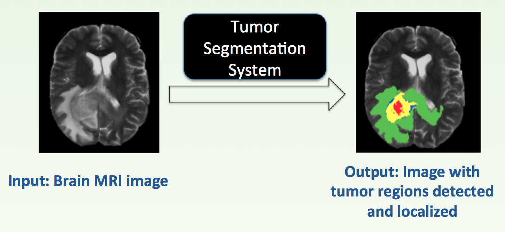
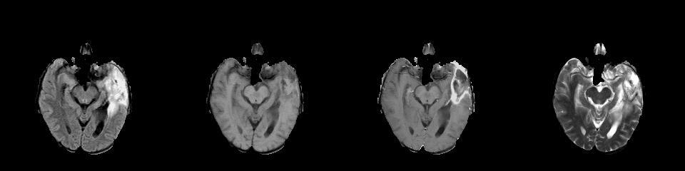
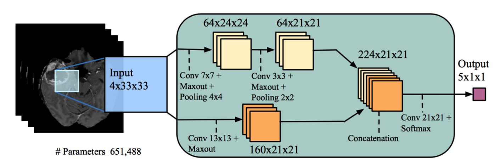
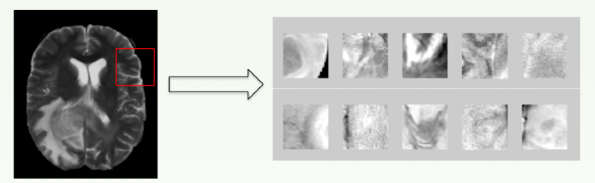
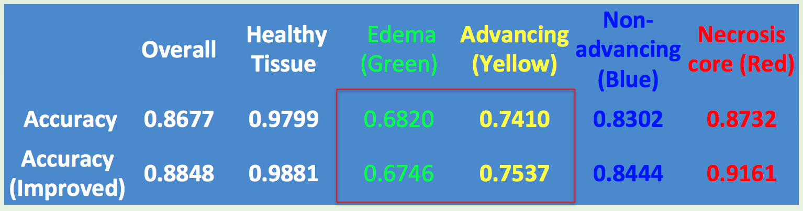
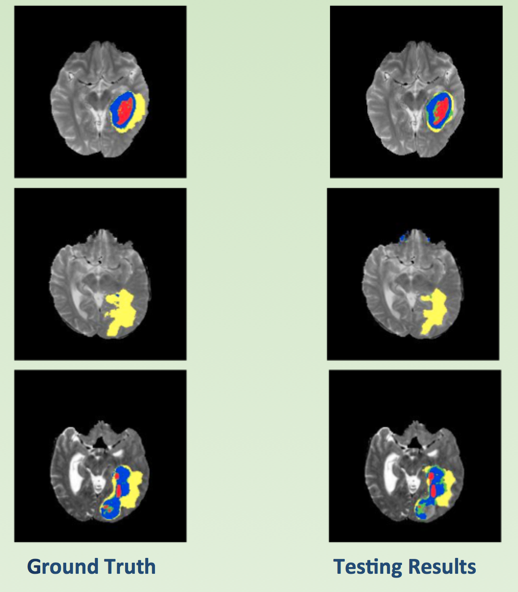
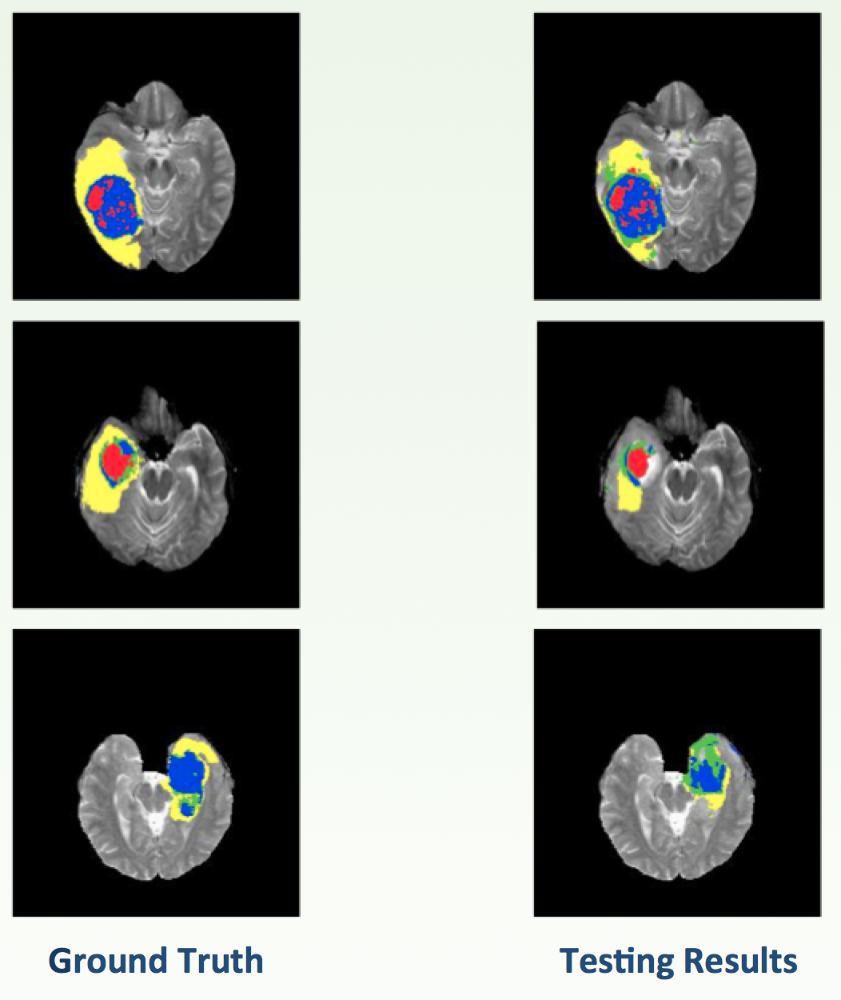

Automatic Brain Tumor Segmentation with Convolutional Neutral Networks
Long Xia Virginia Tech
1. Abstract
Tumor segmentation on the Magnetic resonance imaging (MRI) data, which is to detect and localize tumor regions, has a great significance to improve diagnostics accuracy and ensure immediate treatments. In this project, convolutional neural network (CNN) was used to tackle the brain tumor segmentation task. Two different CNN architectures were proposed and implemented. Results show that the architecture we proposed has a better performance over the one of the best models available.
2. Teaser figure
Figure 1 demonstrates the main idea behind the project. The segmentation system will take original MRI image as the input and produce the output with the tumor regions detected and localized.

Figure 1: Demonstration of brain tumor segmentation system.
3. Introduction
Around 250,000 people worldwide are suffering from brain tumor. A timely diagnosis and treatment would greatly expend their life expectancy. Magnetic resonance imaging (MRI) is widely used to diagnose brain tumor. Tumor segmentation on the MRI images, which is to detect and localize tumor regions, has a great significance to improve diagnostics accuracy and ensure immediate treatments.
Tumor has different extensions, namely edema, advancing tumor, non-advancing tumor, and necrotic tumor core. We need to distinguish them from healthy tissues. By applying different radio frequency pulse, we can get a better visualization of the different types of tissue. Thus, MRI normally employs several modalities to get a distinct identification of each tissue type based on their chemical and physiological properties.
Figure 2 shows the results obtained from four different modalities: (from left to right) Fluid Attenuated Inversion Recovery, T1, T1-contrasted, and T2. So there are four channels for each slice of MRI image, which is quite similar to the RGB three channels image.

Figure 2: Four modalities with different pulse sequences.
Currently, the segmentation is done by experts manually, which is time-consuming, tedious, and error-prone. Thus, a reliable and fast automatic segmentation method is in great demand. However, two major obstacles greatly compromise their performance and application. The tumors are very spatially diverse, which makes the segmentation very difficult. Also, many segmentation methods heavily reply on hand-designed features, which requires specific prior knowledge.
So the goal is to develop a novel automatic segmentation system, to achieve an improvement in performance over current state-of-the-art systems. The input of the system will be the MRI images of tumor patients, and the output will be the images with tumor parts localized and segmented. The system should require little or no prior demain knowledge, and be accuract and fast enough to get results, both of which are crucial for their applications in the real world.
4. Approach
Convolutional neural networks (CNNs) have become the best approach for many computer vision problems. However, less attention has been focused on applying CNNs in the medical domain. CNNs should be a powerful tool that is well suited for tumor segmentation purpose, due to their high flexibility and spatial invariance, and ability to learn features automatically [1], so minimal prior knowledge and preprocessing are required. Therefore, CNN architecture will be used to build the segmentation model.
4.1 CNN Model Architecture
Figure 5 is the basic CNN architecture in this project, and is published in [2]. The other architecture I proposed is built on top of this model, but with changes of the convolution filter size, patch selection strategy, and multi-phase trainning.

Figure 3: Two-pathway CNN architecture[2].
The basic idea for this two-pathway architecture is that we would like the prediction of the label of a pixel to be influenced by two aspects: the environment close to the target pixel and also the larger global features.
There are two streams: the top pathway uses smaller filters (7x7 and 3x3) but with deeper network, which will consider the local dependency; the bottom pathway uses larger filters (13x13), which is focusing on the global dependency. The output of both stream will have the feature maps with same size (21x21), and be concatenated to get one combined feature map, which is used for classification.
4.2 Dataset
The dataset is from 2015 brain tumor segmentation challenge [4]. This is real MRI data for around 300 patients, each has 155 brain slices. The ground truth labeled by experts is provided. An example of the original MRI image and ground truth were shown in figure 1. Different color represent different tumor regions.
5. Experiments and results
To obatin a trained model, a three-step workflow is constructed and shown in figure 3. Starting from original MRI image, a preprocessing is required to get normalized data (Step A); then segmentation means each pixel in the image needs to be classified, and patches with certain size, centered on target pixel, will be used as input to predict the class of center pixel. So second step is patch selection (Step B); the last step is to implement and train the CNN model using patch data (Step C).
Figure 4: Workflow to train a CNN model.
5.1 Data Preprocessing
Since CNN is able to learn useful features automatically, only minimal preprocessing is applied, including n4ITK bias correction [5] on all T1 and T1-contrasted images and normalization on all images. The preprocessing is to normalize the imagee, since they were obtained from different MRI machines and under different conditions. The processed MRI images were used directly for patch selection.
5.2 Patch Selection
As discussed previously, since we need to predict every pixel in the MRI image, we will use patches with certain size, centered on target pixel, as input for model trainning. Figure 4 demonstrates the patch selection process and some examples of patches selected.

Figure 5: Patch Selection Process and Patch Examples.
CNN requires a large trainning data to tune the model parameters. Thus, a large patch dataset (size: 33x33) was created, with 1.2 million randomly selected patches for trainning and 0.4 million for testing. One important fact needs to be pointed out is that the input data was made to be relatively balanced, with 50% of the data to be healthy tissue, and 12.5% for each tumor extension. The motivation is that the original data is very unbalanced, more than 98% of the data belongs to normal tissue. If we do not use balanced data for trainning, the model will simply predict all the brain part as tumor, and only the black area as healthy tissue.
5.3 CNN Model Trainning and Implementation Details
Caffe [6], an open-source deep learning framework, was used to implement the models. It supports the use of GPU, which can greatly accelerate the training and execution processes. GPU (NVIDIA GTX 1070) was used at both trainning and testing time. The training takes nearly 18 hours by using GPU computing for 450,000 iterations. The learning rate starts with 0.001, and reduced by a factor of 10 for every 150,000 iterations.
5.4 Evaluation Metrics
Due to time limit, the evaluation on the official testing images was not conducted. The metrics used is just the accuracy for the classification for each region class. This is fine at this moment, since the first step of this project is to get better performance compared with current available models. Also, the results on whole MRI images were shown for demonstration and hints for possible improvements.
5.5 Results
The quantitative evaluation was summarized in Table 1, which contains the overall accuracy and per-class accuracy for the model published in [2] and my proposed model. The results show that my model achieved better accuracies except for Edema region.
The table shows that the accuracies for Edema(green) and Advancing(yellow) regions are much lower than those of other regions, and one possible reason is that there is no clear boundary between these two regions, and the model failed to identify the Edema region from healthy tissue. The visual demonstrations can be found in section 6. Further improvements need to be made to solve these problems.

Table 1: Overall and per class accuracy of two models.
6. Qualitative Results
In this part, several visual examples of the results obtained by my model, including both good and bad results, were shown to help get a better understanding of current status of the performance.
Good Result
Figure 6 shows some good results obtained by my model. The top one shows the model can accurately identify different regions with a relatively uniform shape. The boundary is quite smooth as the ground truth. The middle one presents the good result for single class prediction. The bottom example demonstrates the results for regions with non-uniform shape, which is also promising.

Figure 6: Good results obtained compared with ground truth.
Bad Result
Figure 7 shows some bad results obtained by my model. The first example shows the classification boundary is not smooth enough in some cases. Also, the model failed to identify tumor parts in some test images, which is demonstrated in second example. Lastly, the accuracies of Edema and Advancing regions are much lower, indicating the model is not doing a great job in identify these two regions, as shown in thrid example.

Figure 7: Bad results obtained compared with ground truth.
7. Conclusions and Future Plans
7.1 Conclusions
In summary, an automatic brain segmentation system was built with two-pathway CNN model. The model I proposed achieves an improvement in accuracy over the currently available method. Also, a large patch input dataset (1.6 million patches) was established, which can be used for further improvements.
7.2 Future Plans and Improvements
Despite the good results obtained, there are some problems with current model, as discussed in section 5 and 6. Future work will be focusing on improving data-preprocessing method, patch selection strategy, modifying CNN architectures, ensembling multiple models, etc. Future updates will be post on this webpage.